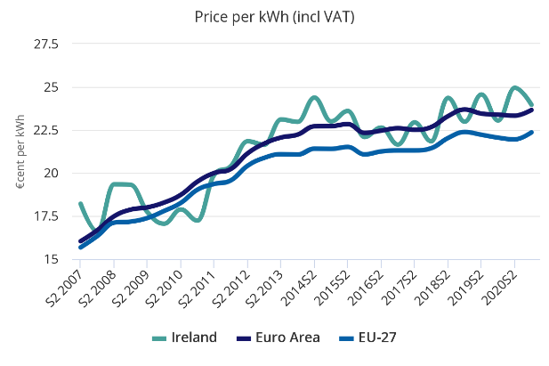
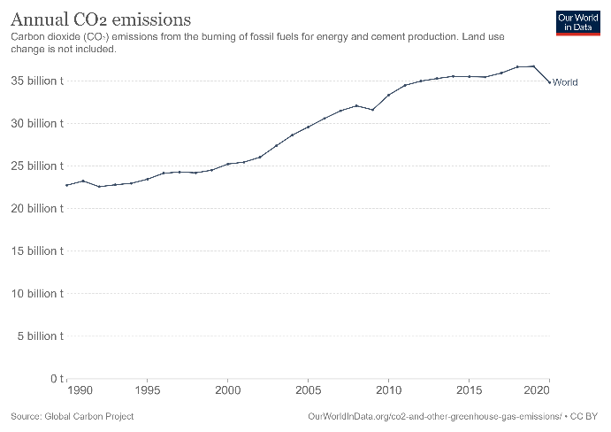
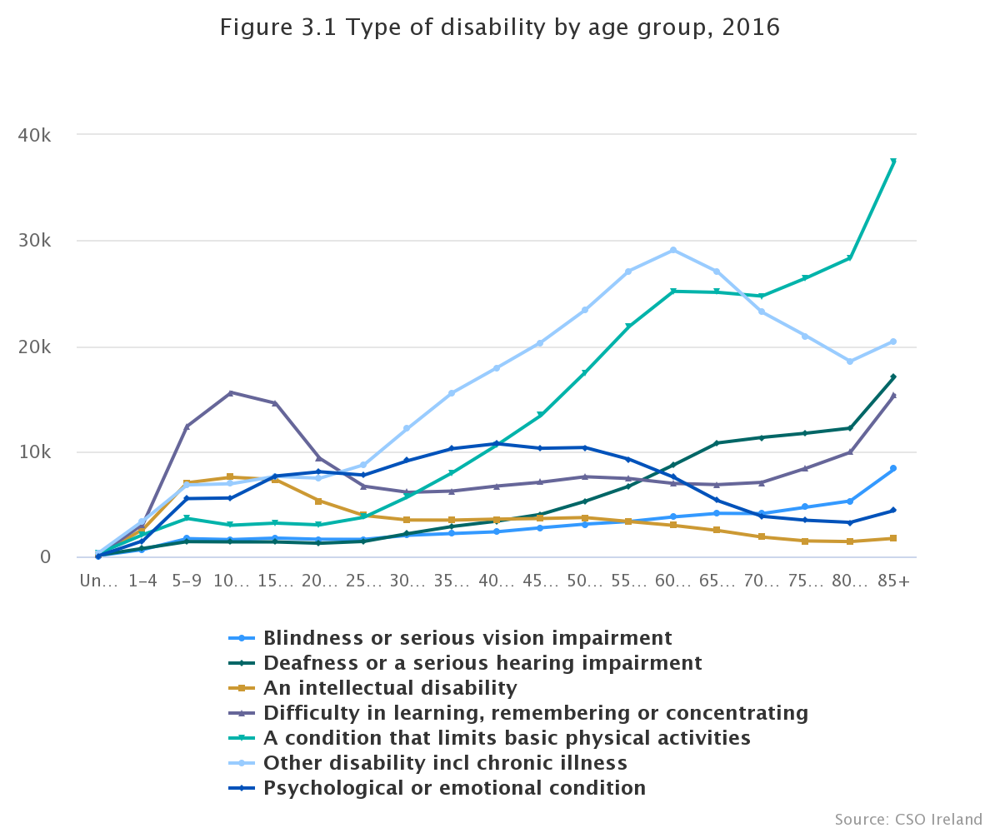

Smart homes incorporate automation systems to provide residents with increased convenience, security, energy efficiency and solutions to climate control. Networked devices connect directly/indirectly via a gateway to the internet in order to control/regulate household functions. In 2021, the smart home penetration rate worldwide was at 12.2%, the number of smart homes worldwide was >258 million and the forecast smart home market worldwide was at 99.41 bn USD [1].
Energy Costs:The graph illustrates that electricity prices for households have been steadily increasing over the last ten years. |
 [2] |
|  [3] |
Global Warming/Consequences:CO2 emissions worldwide increased from 6 billion to over 34 billion tonnes between 1950 & 2020 [3]. NASA statistics reveal that from 1800-2021 global surface temperatures increased significantly (-0.1 to 0.8°C). 2021 had the 6th highest temperature on record (NOAA, 2021) due to global warming [4]. In British Columbia, in 2021, 595 deaths occurred related to temperatures > 40 °C (‘heat-dome’), 70% of the dead were aged >70 years and 99% overheated inside a home/hotel [5]. The elderly/disabled are at increased risk during heatwaves [7]. Hyperthermia, is a thermoregulatory disorder where core temperature increases > 40.5°C is a medical emergency. Early recognition of heat increases (externally/internally) is required to reduce the thermal risk [8]. |
Disabilities:‘Persons with disabilities’ are “… all persons with disabilities including those who have long-term physical, mental, intellectual or sensory impairments” [8]. The CSO (2016) reported that overall 262,818 people had difficulties with basic physical activities [9]. |  [9] |
It is proposed to develop an embedded home automation system which will reduce the users risk of hyperthermia indoors during heatwaves and monitor/control it remotely.
Persons with disabilities/Older persons/General population.
| Potential Solutions: | User | Problem addressed: |
|---|---|---|
| Heating, ventilation and air condition (HVAC) Automatic temperature control | Persons with intellectual/physical disabilities at risk from temperature increases | Prevent hyperthermia (Heat)/ Hyperthermia(Cold) for persons unable to understand/respond to the risks |
| Automatic Window Open/Close | General public | Reduction of noise pollution above 70dB and air circulation |
| Smart Door Open/Close Automatically | Wheelchair users | Removes accessibility problems entering/exiting rooms/buildings |
| Company | Products/Function | User |
|---|---|---|
| The Google Nest Learning Thermostat (2022) [10] | Adjusts temperatures to optimal levels | General population |
| Lilli [11] | Web-based interface monitors behaviours | People self-limiting conditions |
| Hunter Fans [12] | Smart ceiling fan, motion sensor integrates with thermostat. | General population |
Social Implications of the embedded home automation system will include increased independence for users, reduction of their risk of hyperthermia indoors during heatwaves providing reassurance and reductions in energy costs/consumption. It will contribute to The National Housing Strategy for Disabled People’s 2022-2027 [13] aim to increase the provision of accessible homes/information/technology to promote people’s participation in their communities and assist in the practical implementation of legislated guidelines from The United Nations Convention on the Rights of Persons with Disabilities (2015)/The National Positive Ageing Strategy (2015) [14,15]. Dependency on the internet, privacy interference and the expense of implementation/maintenance creating disparities in uptake are some ethical concerns. The website will make the products accessible.
| Artefacts | Objectives | Potential Technical Solutions: | Chosen Solution |
|---|---|---|---|
| Website | Interactive, Accessible Fictional automation system. Marketing of product. Monitor/control the embedded system. Capture Data. Validation Checks. Display front-end features. | Programming features: HTML Firebase databases Python JavaScript CSS bootstrap bundle min js bootstrap bundle CSS | All |
| Embedded System: - HVAC System - Remote/Internet Activated Lights | Temperature monitor/control Automated, Air circulating, Energy-efficient Time/triggered locally Sensors, Communication network. | Automated fan/temperature sensor General Purpose Operating System (GPOS) Real-Time Operating Systems (RTOS) Microprocessor Micro:Bit: Microcontroller Hardware/Software | All |